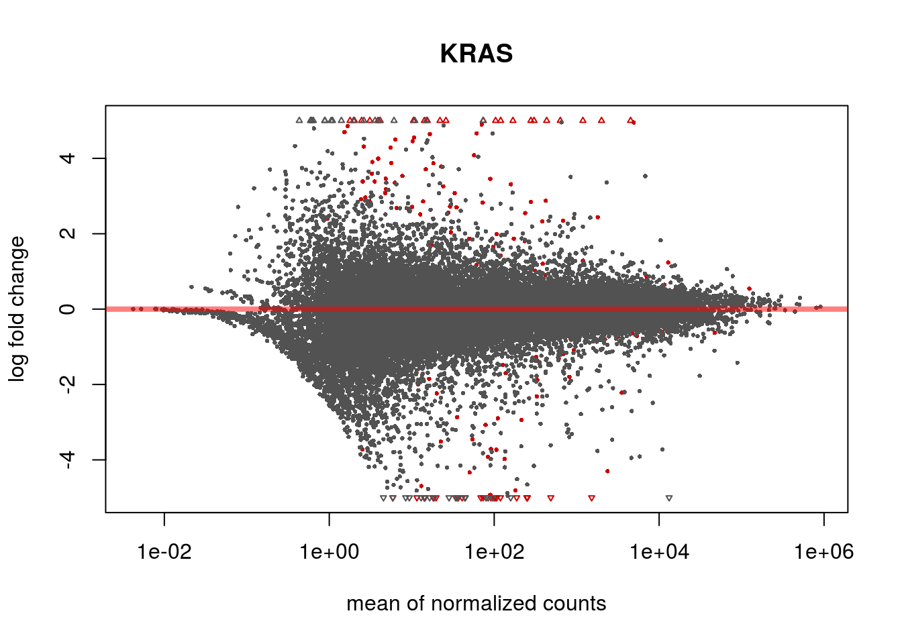
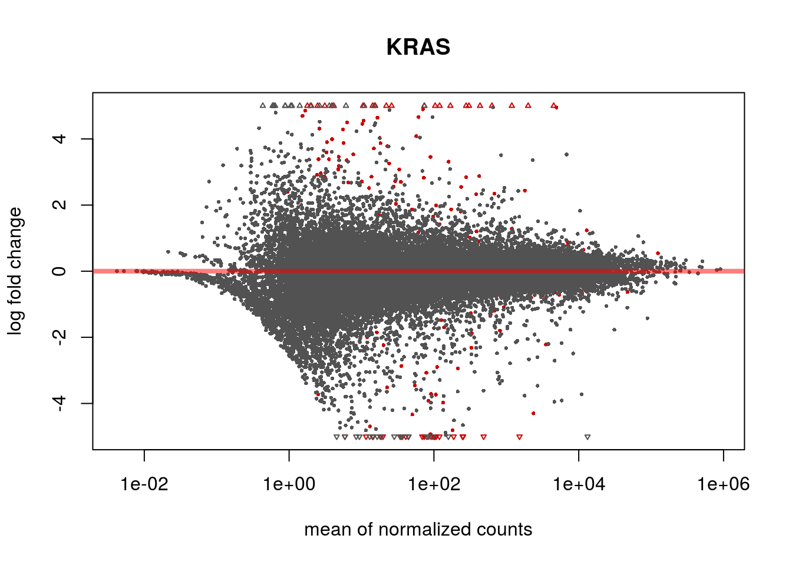
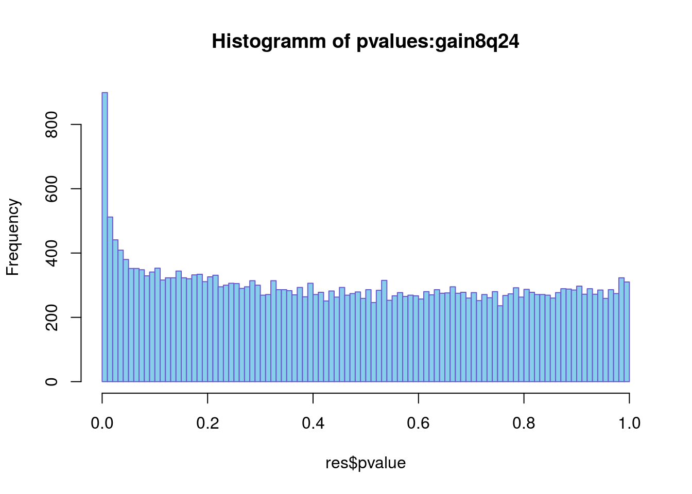
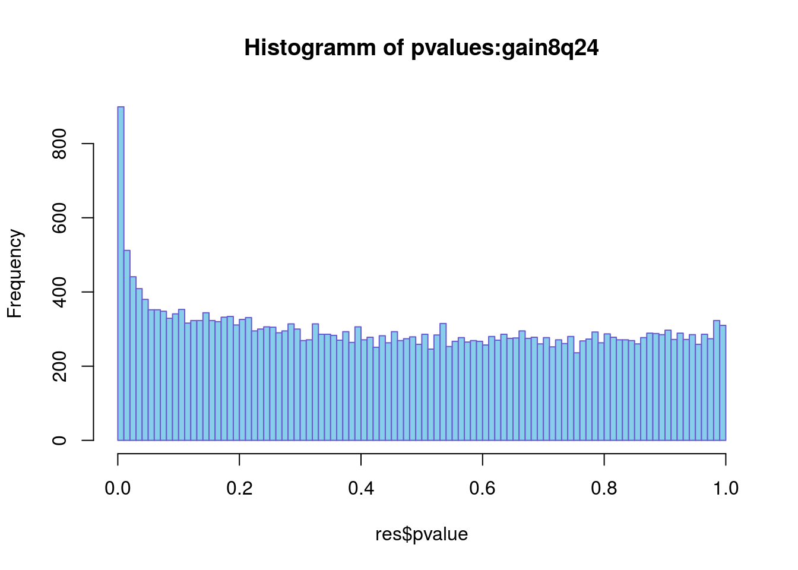
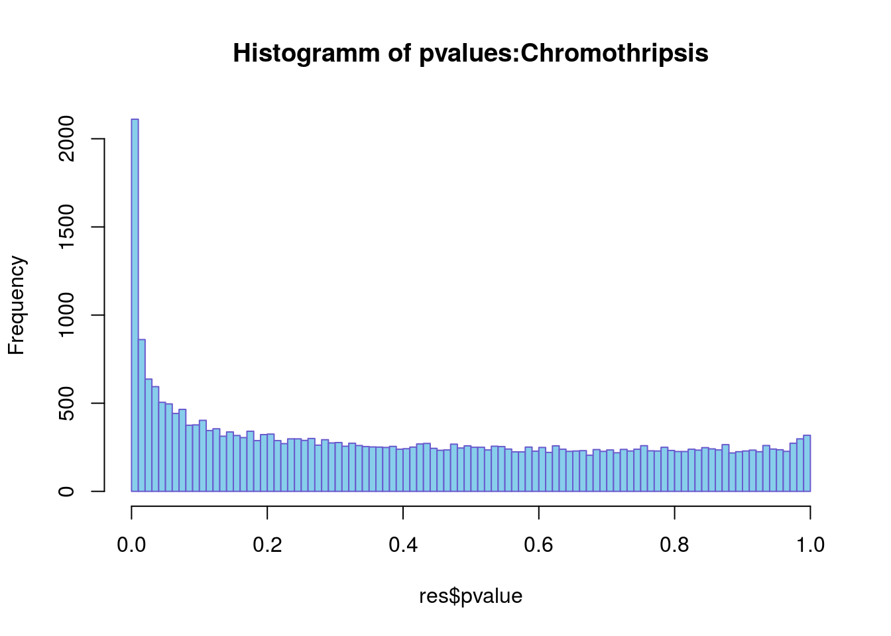
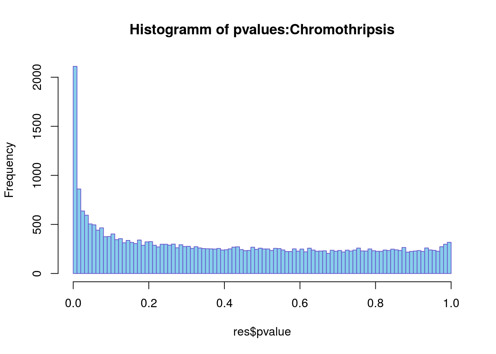
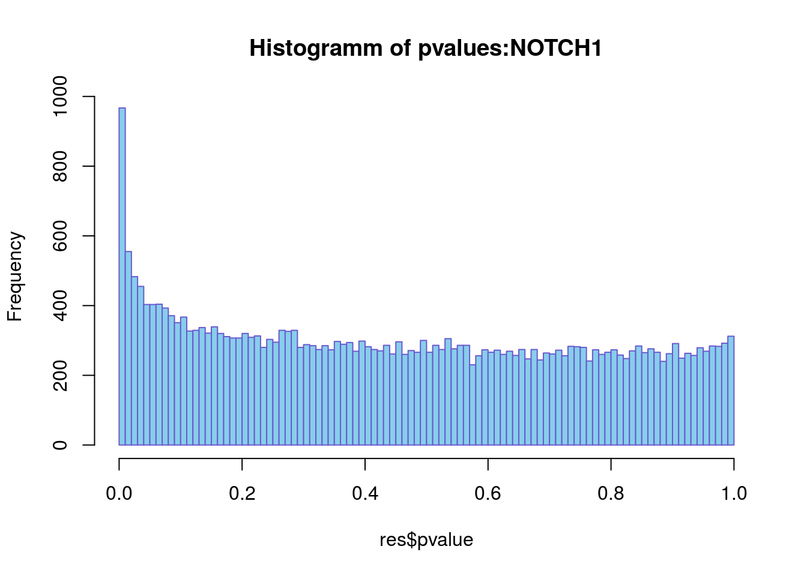
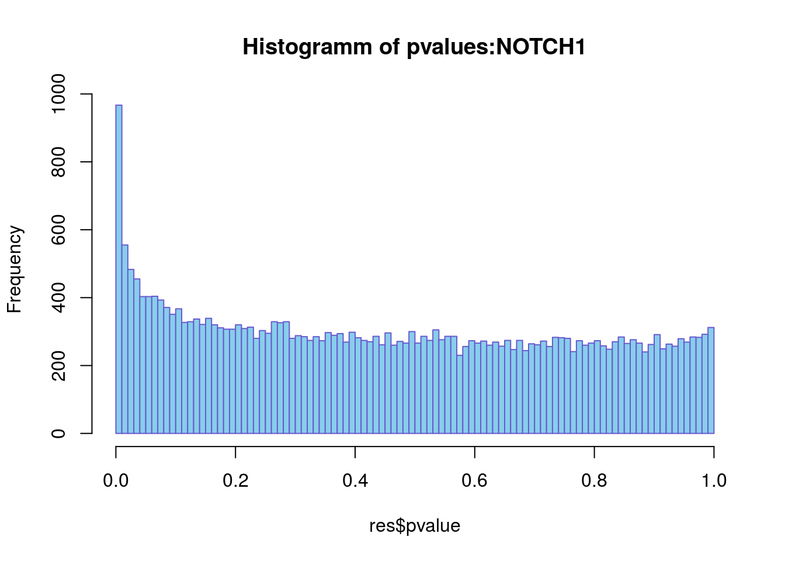

Differentially expressed genes
almut
15 November 2019
Last updated: 2019-11-17
Checks: 7 0
Knit directory: transcriptome_cll/
This reproducible R Markdown analysis was created with workflowr (version 1.4.0). The Checks tab describes the reproducibility checks that were applied when the results were created. The Past versions tab lists the development history.
Great! Since the R Markdown file has been committed to the Git repository, you know the exact version of the code that produced these results.
Great job! The global environment was empty. Objects defined in the global environment can affect the analysis in your R Markdown file in unknown ways. For reproduciblity it’s best to always run the code in an empty environment.
The command set.seed(20190511) was run prior to running the code in the R Markdown file. Setting a seed ensures that any results that rely on randomness, e.g. subsampling or permutations, are reproducible.
Great job! Recording the operating system, R version, and package versions is critical for reproducibility.
Nice! There were no cached chunks for this analysis, so you can be confident that you successfully produced the results during this run.
Great job! Using relative paths to the files within your workflowr project makes it easier to run your code on other machines.
Great! You are using Git for version control. Tracking code development and connecting the code version to the results is critical for reproducibility. The version displayed above was the version of the Git repository at the time these results were generated.
Note that you need to be careful to ensure that all relevant files for the analysis have been committed to Git prior to generating the results (you can use wflow_publish or wflow_git_commit). workflowr only checks the R Markdown file, but you know if there are other scripts or data files that it depends on. Below is the status of the Git repository when the results were generated:
Ignored files:
Ignored: .Rhistory
Ignored: .Rproj.user/
Untracked files:
Untracked: data/2018-03-05_IGHV.RData
Untracked: data/patmeta_170324.RData
Untracked: output/IGHV1_69.svg
Untracked: output/desRes_15112019.RData
Untracked: output/diff_genesATM_diffGenes.csv
Untracked: output/diff_genesBRAF_diffGenes.csv
Untracked: output/diff_genesMED12_diffGenes.csv
Untracked: output/diff_genesNOTCH1_diffGenes.csv
Untracked: output/diff_genesSF3B1_diffGenes.csv
Untracked: output/diff_genesTP53_diffGenes.csv
Untracked: output/diff_genesdel11q22.3_diffGenes.csv
Untracked: output/diff_genesdel13q14_diffGenes.csv
Untracked: output/diff_genesdel17p13_diffGenes.csv
Untracked: output/diff_genesdel8p12_diffGenes.csv
Untracked: output/diff_genesgain8q24_diffGenes.csv
Untracked: output/diff_genestrisomy12_diffGenes.csv
Untracked: output/figures/hist_mutations.svg
Untracked: output/figures/overview_mutations.pdf
Untracked: output/figures/sum_diffGenes_0.05_2.pdf
Untracked: output/figures/sum_diffGenes_noTsig.pdf
Untracked: output/figures/sum_diffGenes_noTsig_IGHVTri12.pdf
Unstaged changes:
Modified: analysis/index.Rmd
Note that any generated files, e.g. HTML, png, CSS, etc., are not included in this status report because it is ok for generated content to have uncommitted changes.
These are the previous versions of the R Markdown and HTML files. If you’ve configured a remote Git repository (see ?wflow_git_remote), click on the hyperlinks in the table below to view them.
| File | Version | Author | Date | Message |
|---|---|---|---|---|
| Rmd | 0836a80 | aluetge | 2019-11-17 | wflow_publish(“analysis/de_analysis.Rmd”) |
Differentially expressed genes in CLL
Aim: Find gene signatures for mutational status of CLL patients
load packages
library(DESeq2)
library(dplyr)
library(magrittr)
library(tidyverse)
library(gridExtra)
library(ComplexHeatmap)
library(matrixStats)
library(here)load data
data_dir <- here("data")
output_dir <- here("output")
figure_dir <- here("output/figures")
#dds data set. gene expression data + patmetadata
load(paste0(data_dir, "/ddsrnaCLL_150218.RData"))
#load meta data including genotyping info
load(paste0(data_dir, "/patmeta_170324.RData"))###Deseq
ddsCLL <- estimateSizeFactors(ddsCLL)
#write a function to perform deseq for different genetic conditions
diff <- function(cond){
ddsCLL_new <- ddsCLL[,!is.na(colData(ddsCLL)[,cond])]
ddsCLL_new <- ddsCLL_new[,!is.na(colData(ddsCLL_new)[,"IGHV"])]
#ddsCLL_new <- ddsCLL_new[,!is.na(colData(ddsCLL_new)[,"trisomy12"])]
colData(ddsCLL_new)[,"IGHV"] <-droplevels(colData(ddsCLL_new)[,"IGHV"])
design(ddsCLL_new) <- as.formula(paste("~ IGHV + ", paste(cond)))
rnaRaw <- DESeq(ddsCLL_new, betaPrior = FALSE)
res <- results(rnaRaw)
resOrdered <- res[order(res$pvalue),]
}
gene_conditions <- c("del13q14", "del8p12", "gain8q24", "del11q22.3", "del17p13", "BRAF", "NOTCH1", "SF3B1", "TP53", "ATM", "MED12", "trisomy12")
#res_list <- lapply(gene_conditions, diff)
#names(res_list) <- gene_conditions
diff_notri12 <- function(cond){
ddsCLL_new <- ddsCLL[,!is.na(colData(ddsCLL)[,cond])]
ddsCLL_new <- ddsCLL_new[,!is.na(colData(ddsCLL_new)[,"trisomy12"])]
design(ddsCLL_new) <- as.formula(paste("~ trisomy12 + ", paste(cond)))
rnaRaw <- DESeq(ddsCLL_new, betaPrior = FALSE)
res <- results(rnaRaw)
resOrdered <- res[order(res$pvalue),]
}
#res_list[["IGHV"]] <- diff_notri12("IGHV")
#save(res_list, file=paste0(output_dir,"/desRes_15112019.RData"))
load(paste0(output_dir,"/desRes_15112019.RData"))Diff genes
pCut <- 0.01
difftab <- function(condition){
dataTab <- data.frame(res_list[[condition]])
dataTab$ID <- rownames(dataTab)
#filter using pvalues
dataTab <- filter(dataTab, padj <= pCut) %>%
arrange(padj) %>%
mutate(Symbol = rowData(ddsCLL[ID,])$symbol)# %>%
#filter(abs(log2FoldChange) > 2)
dataTab <- dataTab[!duplicated(dataTab$Symbol),]
dataTab <- dataTab[!is.na(dataTab$Symbol),]
rownames(dataTab) <- dataTab$ID
write.csv(dataTab, file=paste0(output_dir,"/diff_genes", condition, "_diffGenes.csv"))
dataTab
}
cond <- gene_conditions
#Only run when you want to write result tables! Change path according to test!
sigRes <- lapply(cond, difftab)
names(sigRes) <- condMA-plots
#Check Ma plots
myMaPlot <-function(condition){
DESeq2::plotMA(res_list[[condition]], ylim=c(-5,5), main= paste(condition))
}
lapply(cond, myMaPlot)


 

[[1]]
NULL
[[2]]
NULL
[[3]]
NULL
[[4]]
NULL
[[5]]
NULL
[[6]]
NULL
[[7]]
NULL
[[8]]
NULL
[[9]]
NULL
[[10]]
NULL
[[11]]
NULL
[[12]]
NULLHistogramm of pvalues
myHist <- function(condition){
res <- res_list[[condition]]
hist(res$pvalue, breaks=100, col="skyblue", border="slateblue",
main=paste0("Histogramm of pvalues:", condition),plot = TRUE)
}
hist_cond <- lapply(cond, myHist)
 



 

 

sessionInfo()R version 3.6.0 (2019-04-26)
Platform: x86_64-pc-linux-gnu (64-bit)
Running under: Ubuntu 16.04.6 LTS
Matrix products: default
BLAS: /usr/lib/libblas/libblas.so.3.6.0
LAPACK: /usr/lib/lapack/liblapack.so.3.6.0
locale:
[1] LC_CTYPE=de_DE.UTF-8 LC_NUMERIC=C
[3] LC_TIME=de_DE.UTF-8 LC_COLLATE=de_DE.UTF-8
[5] LC_MONETARY=de_DE.UTF-8 LC_MESSAGES=de_DE.UTF-8
[7] LC_PAPER=de_DE.UTF-8 LC_NAME=C
[9] LC_ADDRESS=C LC_TELEPHONE=C
[11] LC_MEASUREMENT=de_DE.UTF-8 LC_IDENTIFICATION=C
attached base packages:
[1] grid parallel stats4 stats graphics grDevices utils
[8] datasets methods base
other attached packages:
[1] here_0.1 ComplexHeatmap_2.0.0
[3] gridExtra_2.3 forcats_0.4.0
[5] stringr_1.4.0 purrr_0.3.2
[7] readr_1.3.1 tidyr_0.8.3
[9] tibble_2.1.3 ggplot2_3.1.1
[11] tidyverse_1.2.1 magrittr_1.5
[13] dplyr_0.8.1 DESeq2_1.24.0
[15] SummarizedExperiment_1.14.0 DelayedArray_0.10.0
[17] BiocParallel_1.18.0 matrixStats_0.54.0
[19] Biobase_2.44.0 GenomicRanges_1.36.0
[21] GenomeInfoDb_1.20.0 IRanges_2.18.1
[23] S4Vectors_0.22.0 BiocGenerics_0.30.0
loaded via a namespace (and not attached):
[1] nlme_3.1-140 bitops_1.0-6 fs_1.3.1
[4] lubridate_1.7.4 bit64_0.9-7 RColorBrewer_1.1-2
[7] httr_1.4.0 rprojroot_1.3-2 tools_3.6.0
[10] backports_1.1.4 R6_2.4.0 rpart_4.1-15
[13] Hmisc_4.2-0 DBI_1.0.0 lazyeval_0.2.2
[16] colorspace_1.4-1 GetoptLong_0.1.7 nnet_7.3-12
[19] withr_2.1.2 tidyselect_0.2.5 bit_1.1-14
[22] compiler_3.6.0 git2r_0.25.2 cli_1.1.0
[25] rvest_0.3.4 htmlTable_1.13.1 xml2_1.2.0
[28] scales_1.0.0 checkmate_1.9.3 genefilter_1.66.0
[31] digest_0.6.19 foreign_0.8-71 rmarkdown_1.13
[34] XVector_0.24.0 base64enc_0.1-3 pkgconfig_2.0.2
[37] htmltools_0.3.6 GlobalOptions_0.1.0 readxl_1.3.1
[40] htmlwidgets_1.3 rlang_0.3.4 rstudioapi_0.10
[43] RSQLite_2.1.1 shape_1.4.4 generics_0.0.2
[46] jsonlite_1.6 acepack_1.4.1 RCurl_1.95-4.12
[49] GenomeInfoDbData_1.2.1 Formula_1.2-3 Matrix_1.2-17
[52] Rcpp_1.0.1 munsell_0.5.0 stringi_1.4.3
[55] whisker_0.3-2 yaml_2.2.0 zlibbioc_1.30.0
[58] plyr_1.8.4 blob_1.1.1 crayon_1.3.4
[61] lattice_0.20-38 haven_2.1.0 splines_3.6.0
[64] annotate_1.62.0 circlize_0.4.6 hms_0.4.2
[67] locfit_1.5-9.1 knitr_1.23 pillar_1.4.1
[70] rjson_0.2.20 geneplotter_1.62.0 XML_3.98-1.20
[73] glue_1.3.1 evaluate_0.14 latticeExtra_0.6-28
[76] modelr_0.1.4 data.table_1.12.2 png_0.1-7
[79] cellranger_1.1.0 gtable_0.3.0 clue_0.3-57
[82] assertthat_0.2.1 xfun_0.7 xtable_1.8-4
[85] broom_0.5.2 survival_2.44-1.1 AnnotationDbi_1.46.0
[88] memoise_1.1.0 workflowr_1.4.0 cluster_2.1.0